Terrestrial Ecoregions of the World: Computational Insights Into Global Biodiversity
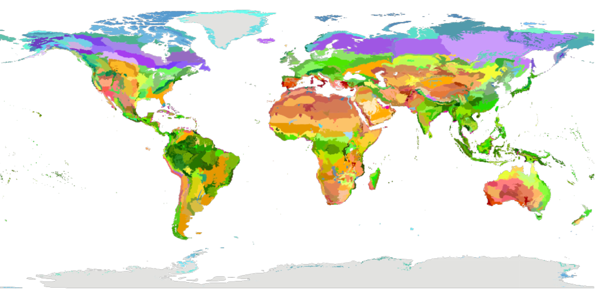
Note: This post was originally a short technical article I shared on the Wolfram Community forum. For an interactive experience with live code or to download this text alongside the source code, please visit the original post here.
Introduction
Ecoregions are distinct ecological zones with specific environmental conditions (climate, topography, soil composition…), habitats, and species. Each ecoregion contains characteristic species and ecological communities that are adapted to the region’s environment.
The Ecoregions2017©Resolve map is a revised version of the widely used 2001 map of terrestrial ecoregions of the world, originally developed by Olson et al. The new map breaks up the Earth’s land into 846 distinct terrestrial ecoregions nested within 14 terrestrial biomes. An interactive version of the map is available online here, and the work is discussed in the following article in BioScience: An Ecoregion-Based Approach to Protecting Half the Terrestrial Realm (Dinerstein et al. 2017).
Terrestrial biomes of the world according to Dinerstein and Olson (also used in the WWF Global 200 classification) already have computational representations in Wolfram Language. Here’s how one might represent them on a map:
Define a list of biomes:
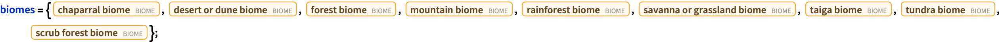
Produce a map of major world biomes:
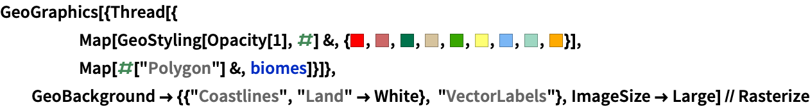
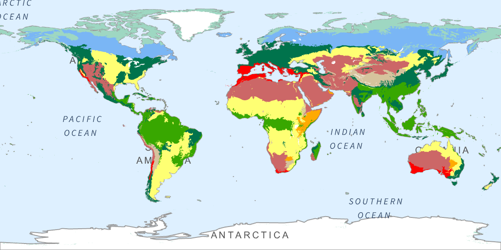
The Ecoregions2017©Resolve data provide a more detailed ecological classification compared to the broader biome categories. While biomes represent large ecological zones based on similar climate conditions and dominant vegetation types, ecoregions offer finer granularity by incorporating specific environmental conditions, habitats, and species unique to each region.
Applications for the Ecoregions2017©Resolve include:
- Depicting the global distributions of species and ecological communities
- Modeling ecological impacts of climate change
- Assisting in the development of conservation strategies
- Reporting progress toward international conservation targets such as the Aichi targets established by the Convention on Biological Diversity.
In this short article, I’ll construct a dataset of Ecoregions2017©Resolve data, demonstrate how to create ecoregion maps, apply data science techniques to filter and summarize the data, and make use of the INaturalistSearch function to search for species observations within ecoregions.
Setup
The Ecoregions2017©Resolve data are available here, licensed under CC-BY 4.0. Let’s load them in.
With the zip file downloaded from this page unzipped and copied to my chosen project directory, the data are ready to import.
Import the ecoregion shapefile data:
In[]:= freshwaterEcoregionsShapefileData = Association[Import[(*Path to the shapefile:*)FileNameJoin[{NotebookDirectory[], "2017 Ecoregions", "Ecoregions2017", "Ecoregions2017.shp"}], "Data"]];
In addition to the data found in the shapefile, the online interactive map also includes links to informative ecoregion descriptions hosted on www.oneearth.org. Let’s incorporate these links into our dataset.
Define an association of ecoregion OneEarth pages:
Wrangle the data to produce a nice tabular dataset:
In[]:= ecoregionsTab = Tabular[Join[
(*LabeledData columns:*) ## & @@ KeyValueMap[Dataset[Map[Association, Thread[#1 -> #2]]] &, Association[freshwaterEcoregionsShapefileData["LabeledData"]]],
(*Geometry column:*) Dataset[Map[<|"Geometry" -> #|> &, freshwaterEcoregionsShapefileData["Geometry"]]], 2]] //
(*Clean up the data and create new columns:*)
TransformColumns[#, {
(*Interpret color data:*)
"COLOR" -> (RGBColor[#"COLOR"] &), "COLOR_BIO" -> (RGBColor[#"COLOR_BIO"] &), "COLOR_NNH" -> (RGBColor[#"COLOR_NNH"] &),
(*Ecoregion OneEarth page column:*)
"OneEarthPage" -> Function[If[KeyMemberQ[ecoregionPages, #"ECO_NAME"], ecoregionPages[#"ECO_NAME"], Missing["Not available"]]],
(*GeoBounds regions column:*)
"GeoBoundsRegion" -> Function[GeoBoundsRegion[GeoBounds[#Geometry]]]}] & //(*Update column names:*)RenameColumns[#, {"ObjectID", "EcoregionName", "BiomeNumber", "BiomeName", "Realm", "EcoBiome", "ProtectionStatusID", "EcoregionID", "ShapeLength", "ShapeArea", "ProtectionStatus", "EcoregionColor", "BiomeColor", "ProtectionStatusColor", "License"}] &;
To avoid having to recompute this, I’ll save it to a parquet file and reload the data:
Define the save path :
In[]:= ecoregionsTabPath = FileNameJoin[{NotebookDirectory[], "2017 Ecoregions", "ecoregions2017.parquet"}];
Save the dataset :
In[]:= Export[ecoregionsTabPath, ecoregionsTab];
Load the data from the file, casting ID columns as machine integers:
In[]:= ecoregionsTab = CastColumns[Import[ecoregionsTabPath], {"ObjectID" -> "MachineInteger", "BiomeNumber" -> "MachineInteger", "ProtectionStatusID" -> "MachineInteger", "EcoregionID" -> "MachineInteger"}]
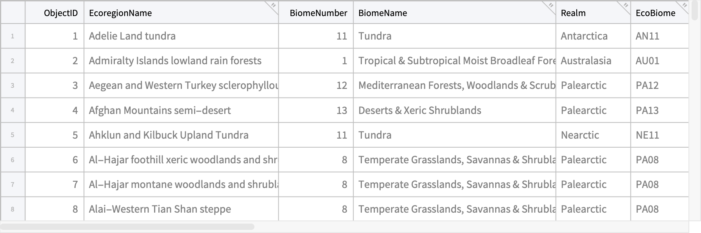
Inspect the structure of the dataset:
In[]:= TabularStructure[ecoregionsTab]
| ColumnKey | ColumnType | NonMissingCount | MissingCount | ByteCount |
|---|---|---|---|---|
| ObjectID | Integer64 | 847 | 0 | 7016 |
| EcoregionName | String | 847 | 0 | 32271 |
| BiomeNumber | Integer64 | 847 | 0 | 7016 |
| BiomeName | String | 847 | 0 | 37478 |
| Realm | String | 847 | 0 | 15195 |
| EcoBiome | String | 847 | 0 | 10411 |
| ProtectionStatusID | Integer64 | 847 | 0 | 7016 |
| EcoregionID | Integer64 | 847 | 0 | 7016 |
| ShapeLength | Real64 | 847 | 0 | 7008 |
| ShapeArea | Real64 | 847 | 0 | 7008 |
| ProtectionStatus | String | 847 | 0 | 26600 |
| EcoregionColor | InertExpression | 847 | 0 | 102016 |
| BiomeColor | InertExpression | 847 | 0 | 102016 |
| ProtectionStatusColor | InertExpression | 847 | 0 | 102016 |
| License | String | 847 | 0 | 14647 |
| Geometry | InertExpression | 847 | 0 | 1471945560 |
| OneEarthPage | String | 844 | 3 | 63549 |
| GeoBoundsRegion | InertExpression | 847 | 0 | 244312 |
Exploration
Visualizing Terrestrial Ecoregions
Producing ecoregion maps
For a start, let’s suppose we’d like to plot the footprint of a specific ecoregion. Here’s one approach:
Extract and plot ecoregion geometry selected from a row in which the “EcoregionName” column matches a provided name:
In[]:= ecoregionsTab // Select[#, Function[#"EcoregionName" == "Irrawaddy moist deciduous forests"]] & // First[Normal[Dataset[#][All, "Geometry"]]] & // GeoGraphics // Rasterize
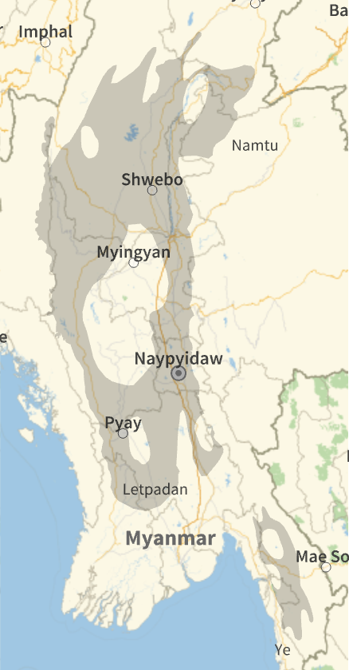
In case you’re unfamiliar with the notation, “//“ (called PostFix) can be read as “and then”, and is one of the ways one can chain together function calls in Wolfram Language. For new WL users coming form scientific backgrounds, this is quite similar to pipes in Python and R.
We may also like to plot several ecoregion footprints. This time, let’s assume we’re matching to a list of ecoregion IDs.
Extract and plot ecoregion geometry from rows where the “EcoregionID” column matches one of the IDs in the provided list:
In[]:= ecoregionsTab // Select[#, Function[MemberQ[{649, 695, 812, 815}, #"EcoregionID"]]] & // Normal[Dataset[#][All,
(*Extract geometry and ecoregion colors, and add tooltips to the footprints:*) {#EcoregionColor, Tooltip[#Geometry, #EcoregionName]} &]] & // Legended[
(*Plot the map:*) GeoGraphics[{GeoStyling[Opacity[.6]], #}],
(*Construct the legend:*) SwatchLegend[## & @@ {#1, #2[[All, 2]]} & @@ Transpose[#]]] & // Rasterize
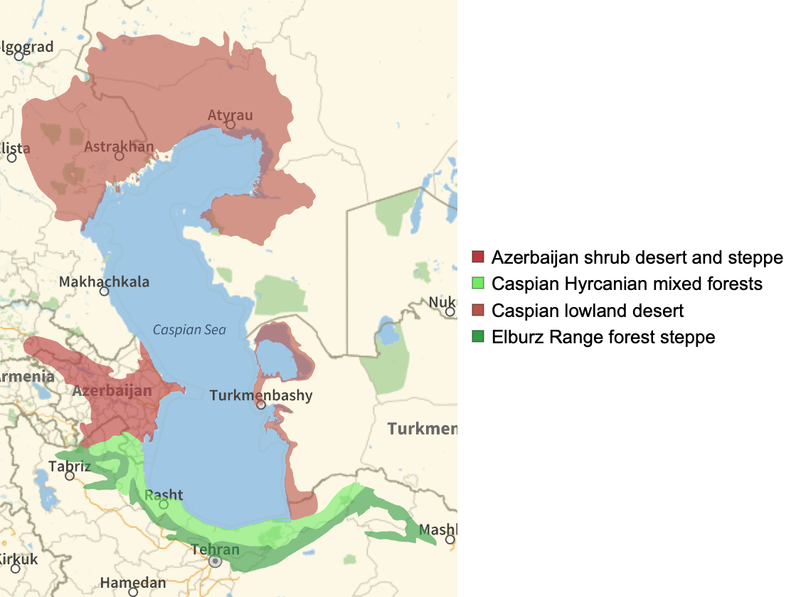
Note that in order to share this article online, I’ve had to rasterize these plots, which disables the tooltips. To enable the tooltips in this notebook, simply download it and delete calls to Rasterize.
To make a world map of terrestrial ecoregions, we simply include all ecoregions in the plot.
Make a world Ecoregions map:
In[]:= Rasterize[GeoGraphics[{GeoStyling[Opacity[1]], Values[Normal[Dataset[ConstructColumns[ecoregionsTab, {"EcoregionColor", "Geometry"}]]]]}, GeoProjection -> "Mercator", GeoBackground -> White], ImageSize -> Full]
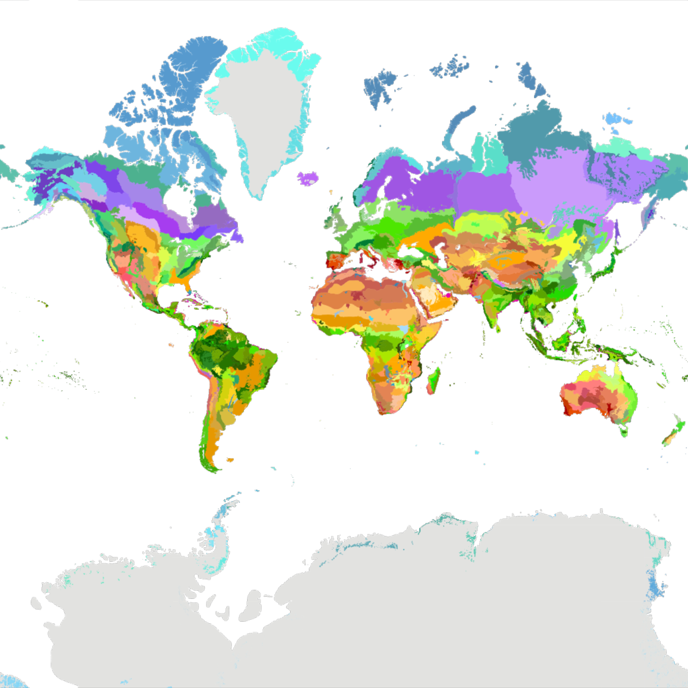
Grouping and plotting ecoregions programmatically
You’re likely to want to select many ecoregions at a time according to logical or mathematical criteria. Here are a few examples to get you started:
Find and plot the 3 largest ecoregions:
In[]:= Take[ReverseSortBy[ecoregionsTab, #"ShapeArea" &], {2, 4}] // ConstructColumns[#, {"EcoregionName", "Geometry"}] & // MapApply[GeoGraphics[#2, PlotLabel -> #1] &, FromTabular[#, "Matrix"]] &
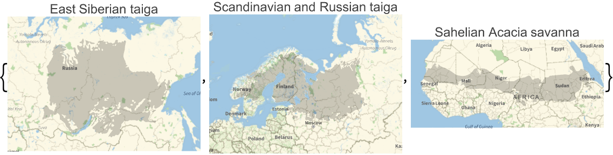
Find and plot all ecoregions within a particular biome:
In[]:= Select[ecoregionsTab, Function[#BiomeName == "Deserts & Xeric Shrublands"]] // Normal[Dataset[#][All,
(*Extract geometry and ecoregion colors, and add tooltips to the footprints:*) {#EcoregionColor, Tooltip[#Geometry, #EcoregionName]} &]] & // GeoGraphics[{GeoStyling[Opacity[.6]], #}, ImageSize -> Large] & // Rasterize
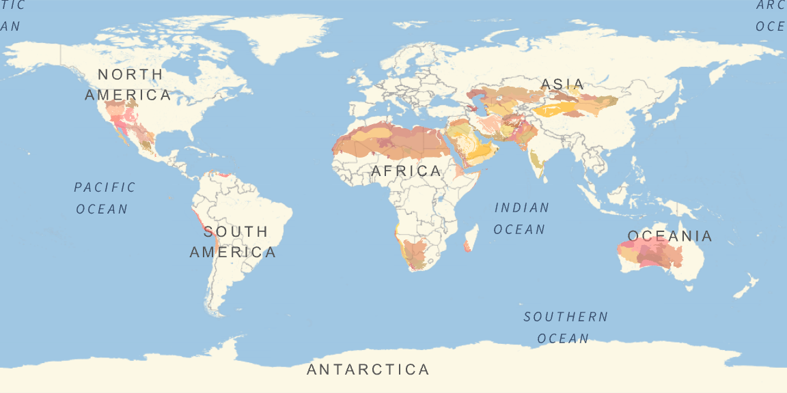
Find and plot all ecoregions within a particular realm:
In[]:= Select[ecoregionsTab, Function[#Realm == "Indomalayan"]] // Normal[Dataset[#][All,
(*Extract geometry and ecoregion colors, and add tooltips to the footprints:*) {#EcoregionColor, Tooltip[#Geometry, #EcoregionName]} &]] & // GeoGraphics[{GeoStyling[Opacity[.6]], #}, ImageSize -> Large] & // Rasterize
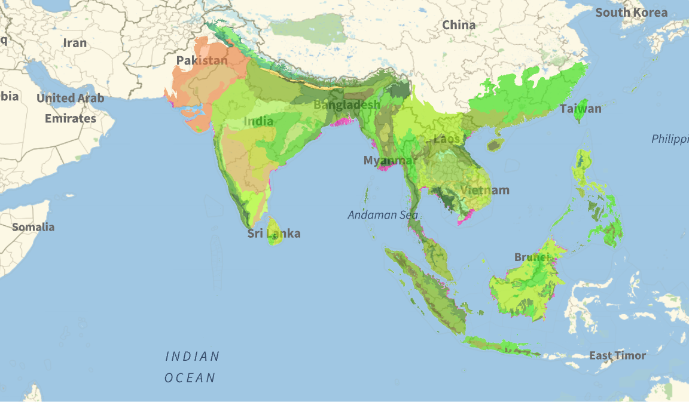
Find and plot all ecoregions whose names contain the word “forest”:
In[]:= Select[ecoregionsTab, Function[StringContainsQ[ToLowerCase[#EcoregionName], "forest"]]] // Normal[Dataset[#][All,
(*Extract geometry and ecoregion colors, and add tooltips to the footprints:*) {#EcoregionColor, Tooltip[#Geometry, #EcoregionName]} &]] & // GeoGraphics[{GeoStyling[Opacity[.6]], #}, ImageSize -> Large, GeoCenter -> {0, 0}] & // Rasterize
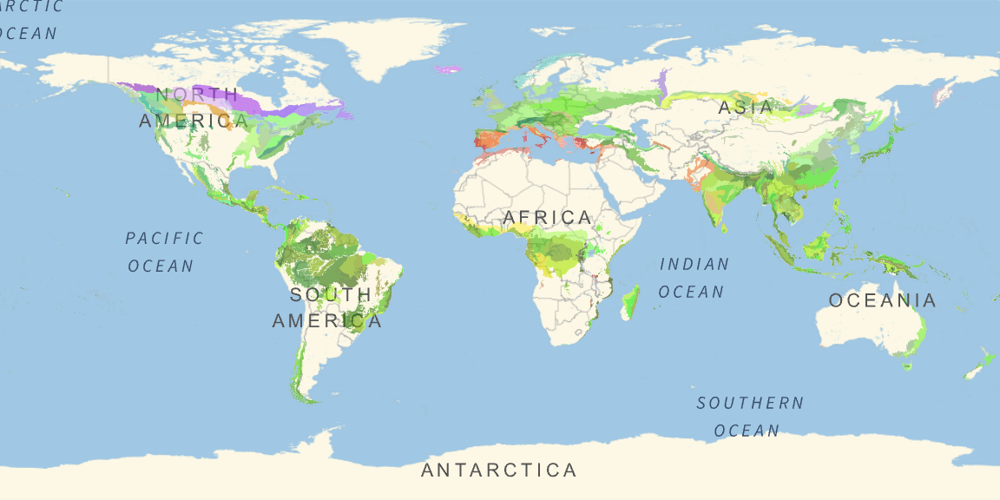
Plot protection status of neotropic tropical and subtropical moist broadleaf forests:
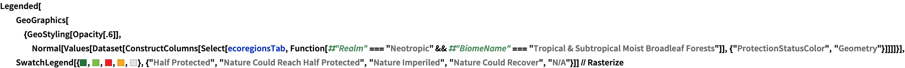
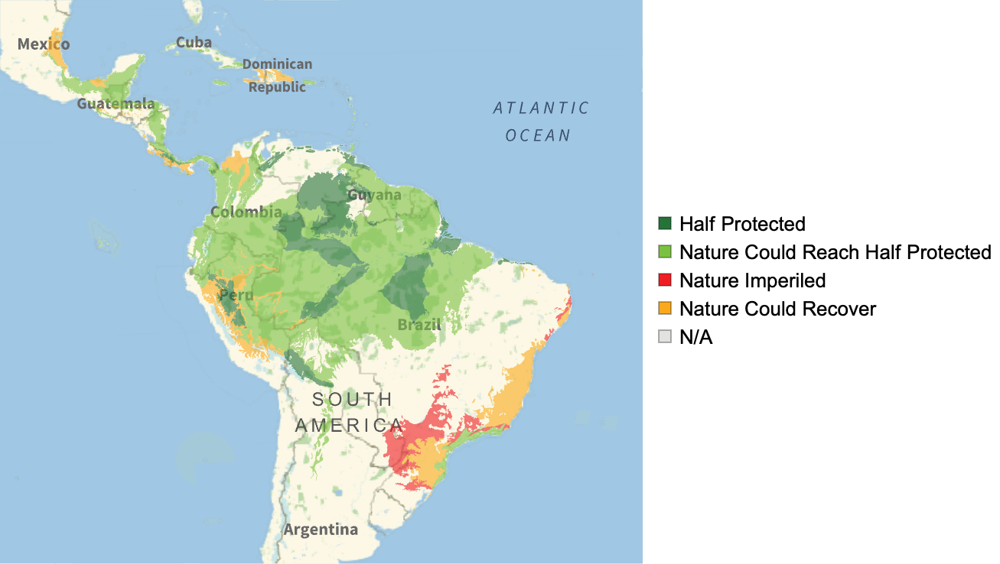
Bonus: Ecoregion2017 GeoServers
For larger maps, assuming you’d like to include every ecoregion in your map’s geographic range, you may elect to connect to one of the Ecoregions2017 GeoServer services for your plotting. This is generally faster.
Construct a dataset of Ecoregions2017 GeoServers:
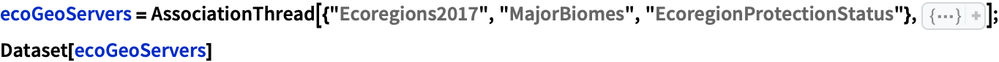
Create world maps for each GeoServer:
In[]:= Dataset[GeoGraphics["World", GeoServer -> #, GeoZoomLevel -> 1] & /@ ecoGeoServers]
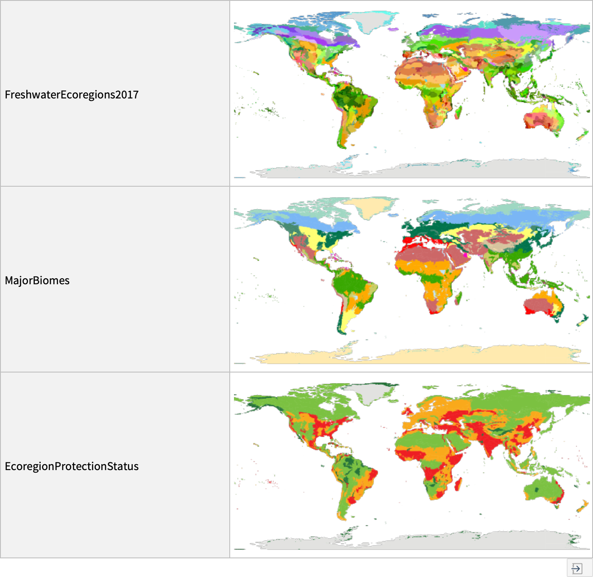
Define the Legends for each map type:
Fetching ecoregion images
The ecoregion descriptions hosted on www.oneearth.org contain illustrative of ecoregion landscapes and emblematic wildlife. Let’s define a function to fetch these images programmatically:
Define a function to collect ecoregion images:
In[]:= ClearAll[ecoregionImages]
(*OneEarth page URL input:*)
ecoregionImages[ecoregionOneEarthPage_URL] := Dataset[Join[
(*Import ecoregion page header images (typically landscapes):*)
Cases[
Import[ecoregionOneEarthPage, "XMLObject"], XMLElement["img", {"src" -> url_, "alt" -> description_, "data-image" -> "data-image", "v-imageloaded" -> "v-imageloaded"}, _] :> <|"Image" -> Import[url], "ImageDescription" -> description|>, {17}],
(*Import ecoregion page body images (typically animals or landscapes):*)
Cases[
Import[ecoregionOneEarthPage, "XMLObject"], XMLElement["figure", {}, {XMLElement["img", {"src" -> url_}, {}], XMLElement["figcaption", {}, {XMLElement["span", {"class" -> "caption"}, {}], XMLElement["p", {}, {description_}], " "}]}] :> <|"Image" -> Import[url], "ImageDescription" -> description|>, \[Infinity]]
]]
(*Ecoregion name input:*)
ecoregionImages[ecoregionName_String] := ecoregionImages[URL[First[Values[Normal[First[
ConstructColumns[Select[ecoregionsTab, Function[#EcoregionName == ecoregionName]], "OneEarthPage"]]]]]]]
(*ID input:*)
ecoregionImages[ecoregionID_Integer] := ecoregionImages[URL[First[Values[Normal[First[
ConstructColumns[Select[ecoregionsTab, Function[#EcoregionID == ecoregionID]], "OneEarthPage"]]]]]]]
Fetch images for a specified ecoregion, along with their descriptions:
In[]:= ecoregionImages["Myanmar coastal rain forests"]
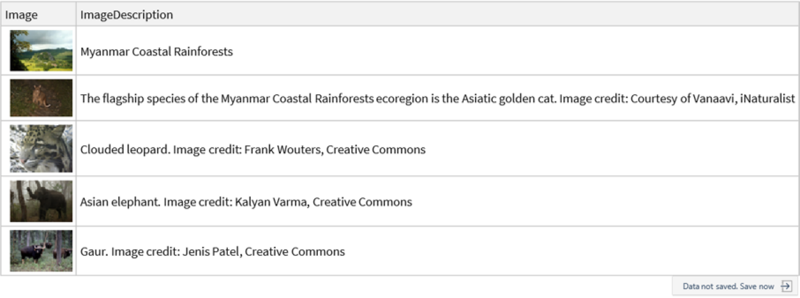
Searching for iNaturalist Species Observations Within Ecoregions
Finally, here’s an example showing one way you might use the ecoregions data explored in this text in combination with other Wolfram Language ecology functionality.
iNaturalist is a citizen science project and online community of naturalists, biologists, and ordinary people who record and share observations of plants, animals, and other life forms. Users can upload photos and sounds, identify species, and contribute to a global biodiversity database.
Observations shared to the iNaturalist platform can be retrieved using the INaturalistSearch function from the Wolfram Function Repository. Let’s use this function to fetch species observations from an specified ecoregion.
Define the region in which to search for observations:
In[]:= region = GeoGroup[Normal[First[Select[ecoregionsTab, Function[#"EcoregionName" == "Puerto Rican moist forests"]]]]["Geometry"]];
Plot this region on a map:
In[]:= GeoGraphics[region] // Rasterize
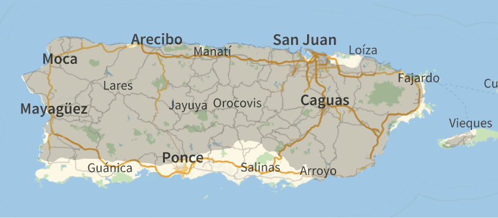
Fetch observations made within this region and within a specified date range (here, set to the last 10 days at time of computation):
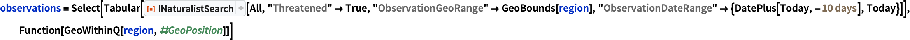
Extract the positions and species names from the resulting dataset, and plot them on a map:
In[]:= GeoListPlot[Flatten[FromTabular[ConstructColumns[observations, "LabeledPosition" -> Function[Labeled[#"GeoPosition", #"TaxonName"]]], "Matrix"]], ImageSize -> 850] // Rasterize
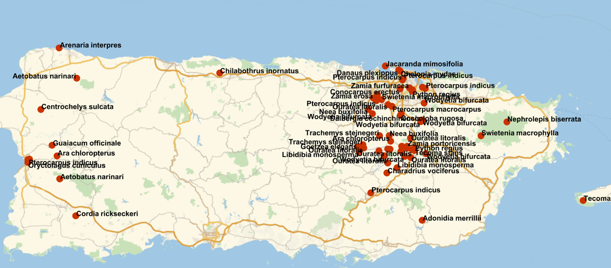
Conclusion
The Ecoregions2017©Resolve dataset lets us explore the incredible variety of ecosystems around the globe. By breaking down Earth’s landscapes into distinct ecological zones, it gives us a fresh perspective on Earth’s diverse habitats and the species that inhabit them. Whether you’re interested in research, conservation, or simply appreciating the beauty and complexity of life on Earth, this dataset offers a clear and engaging way to use computation to explore questions about ecology, biodiversity, and environmental science.
Cite this work
Terrestrial ecoregions of the world: computational insights into global biodiversity by Phileas Dazeley-Gaist Wolfram Community, STAFF PICKS, April 17, 2025 https://community.wolfram.com/groups/-/m/t/3445374